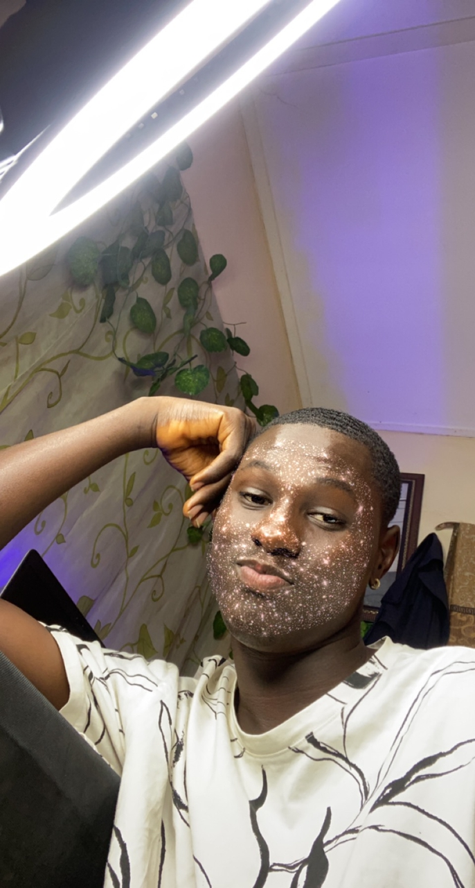

Fatona Ayomide Tolani

Summary
I am a very deligent and determined person who is ready to take up any task thrown at him, very responsible and able to think outside the box.
Education
- First School Leaving Certificate (FSLC) - Omoleye Chlildren School (2008-2014).
- Senior School Certificate Examination (SSCE) - Kings College Lagos (2014-2020).
- Bachelor's Degree in Computer Science (BSc) - Mountain Top University (2022-Till date).
Work experiennce
Skills
Awards and certifications
- Certificate of Participation at the Nigeria Regional championship of FIRST LEGO LEAGUE Program.
Hobbies
Contacts